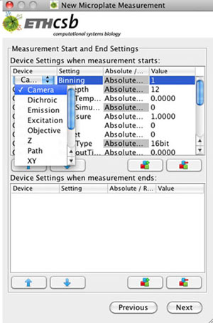

Measurement Start and End Settings

In Measurement Start and End Settings the window is splitted into two parts. These two parts are labeled with Device settings when measurement starts and Device Settings when measurement ends. They contain the device settings before and after the measurement. For each device different settings can be chosen, like binning, gain etc. for the device camera. For the settings an absolute or relative value can be given. In most measurements the values for the camera settings are changed during the preparation of the measurement, e.g. if the imaging has to be done with lower exposure time to avoid sample damage, the gain can be increased. Thus by default, the current camera settings are pre-initialized in the field Device settings when measurement starts. The pre-initialization of the camera settings in Devise settings when measurement starts can be activated or deactivated in the Configuration Settings, localized in File->Configuration->Compartibility. However other device settings can be easily added and set at the start or end of a measurement.
 |
Figure 2a:Flowchart of a Microplate Measurement: The general description of this figure is located in Figure 1 in Measurement Properties for a Microplate Measurement. The startup settings and the shutdown settings and are highlighted by a ellipse. |
{kind=link}
{kind=link}
{kind=link}